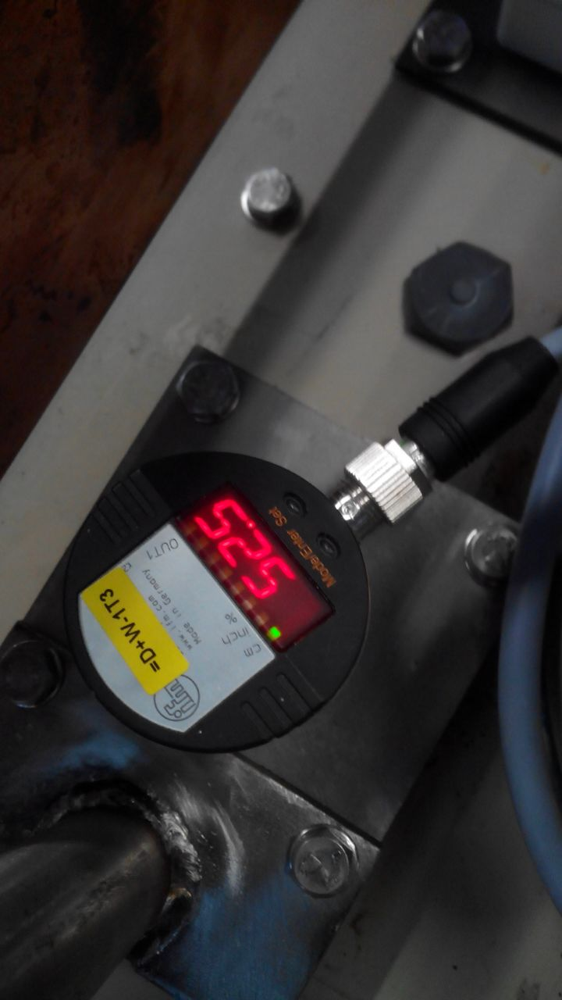
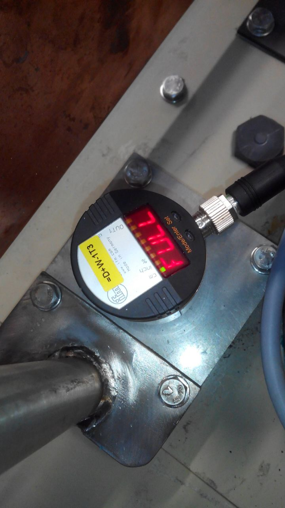

Falha de energia ou ar comprimido
Antes de fazer seja o que for é muito importante verificar sempre o enchimento que foi aplicado para sabermos o que fazer a seguir.
Dureza alta ou baixa
Alterar valor do (Ah) conforme necessário para obter os valores desejados, evitando ao máximo mexer nos (ml), ao subir o valor do AH (ex: passar de 65 para 70) estarão a baixar á dureza do cobre, ao baixar o valor do AH estarão a subir á dureza do cobre, um dos fatores muito importantes por vezes da diferença de durezas pode estar no fato de a cesta ter falta de cobre em algumas zonas, sendo muito importante nesta triagem a medição continua de dureza em 3 pontos do cilindro (inicio, meio e fim), havendo outro fator a ter em conta sendo o deposito do aditivo diluido, verificar se o mesmo se encontra com aditivo, caso não exista fazer a diluição do mesmo na seguinte formula (1 Lt de aditivo (HelioCopper Rapid Concentrate) por 17 Lt de água desmineralizada).


Sobrecarga eletrólito
1º passo – verificar nível do banho visualmente (se estiver cheio, necessário retirar banho).
2º passo – verificar sensor (se no sensor estiver full e o banho estiver baixo, tem de se desmontar o sensor desapertando primeiro o cabo de ligação e deposi desapertar completamente o sensor e retira-lo puxando para cima após desapertado, o sensor é composto por uma vara metálica que possivelmente estará molhada dando erro de leitura, necessário limpar a vara e a membrana plástica por onde ela passa com um papel seco, volta a montar tudo igual e o sensor passa a deixar de aparecer FULL e passa a existir números dependendo do nível do banho).

